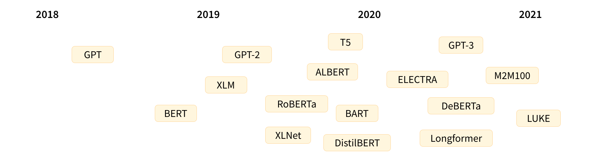
PPOL 6801 - Text as Data - Computational Linguistics
Week 12: Transformers
Professor: Tiago Ventura

Transformers: Summary
Definition: a Neural Network with a specific structure that includes a mechanism called self-attention.
Publication: first introduced in the paper Attention is All You Need by a group of researchers from Google Brain.
Usage: Core architecture behind most recent developments of Natural Language Processing, such as recent LLMs:
Terminology
Transformers: Neural architectures built around multihead self-attention
RNN: Non-transformers, Recurrent Neural Network, processes sequences sequentially, inputs static embeddings, outputs probability over vocabulary
LSTM: Non-Transformers, Long Short-Term Memory network, an enhanced RNN with gating mechanisms.
Bert: Encoder only Transformer, pretrained on unlabeled text to predict masked tokens in a sentence, ~ 300M parameters. Other similar models: RoBERTa, DiBERTa, XLMRoBERTa, among others
LLMs: Large Language Models. Language models (next word prediction) based on Transformer, often Decoder only models
GPT-x: A decoder-only autoregressive transformer, owned by OPENAI. GPT-3 has ~ 175 billion parameters
LLama: also decoder model, owned by META, trying to keep up with OpenAI
NLP Tasks leading to Transformers
The development of Transformers comes from tasks based on next word prediction (as the word embeddings algorithms we saw). These are at the foundation two core NLP applications:
Language Modeling: Predicts the next token using prior sequence
Machine Translation: translate text from one language to another by learning the representation of input text, and predicting words on the translated language.
A Tour: From Embeddings to Transformers
Between Embbedings and Transformers, the field of NLP used a variety of DL architectures to tasks related to Machine Translations and Language Modeling. Let’s briefly understand them so that we can see the transformative impact of Transformers
Fixed Window Neural Networks
RNN
LSTM
Fixed Window Neural Language Model
output distribution
\[\hat{y} = \mathrm{softmax}(U h + b_2) \in \mathbb{R}^{|V|}\]
hidden layer
\[h = f(W e + b_1)\]
concatenated word embeddings
\[e = [e^{(1)}; e^{(2)}; e^{(3)}; e^{(4)}]\]
words / one-hot vectors
\[x^{(1)}, x^{(2)}, x^{(3)}, x^{(4)}\]
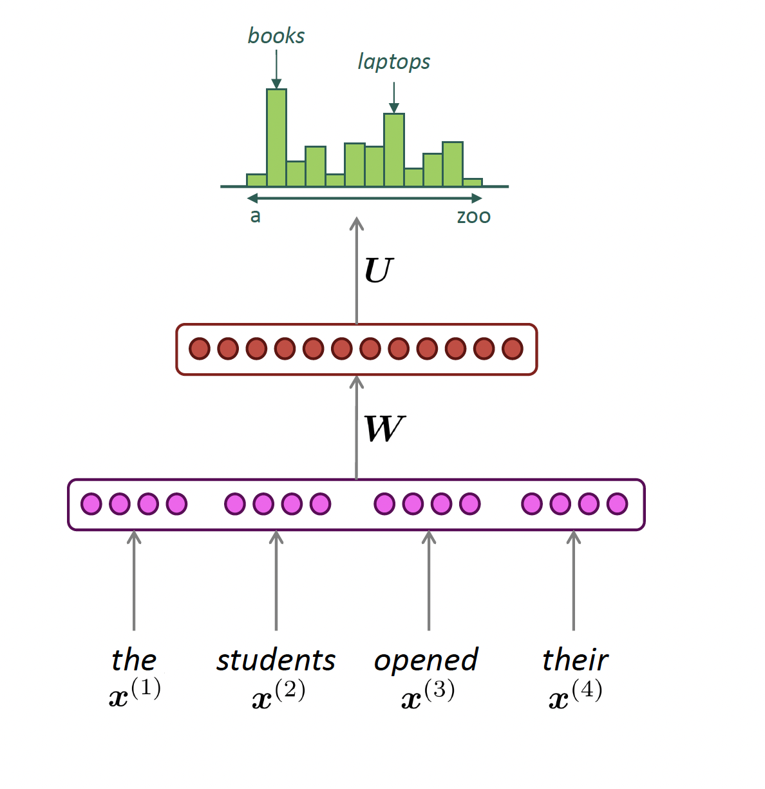
Reccurrant Neural Network (RNN)
Def: Neural network architecture that processes sentences sequentially with hidden states that carry over-time information.
output distribution
\[\hat{y}^{(t)} = \mathrm{softmax}\left(U h^{(t)} + b_2\right) \in \mathbb{R}^{|V|}\]
hidden states
\[h^{(t)} = \sigma\left(W_h h^{(t-1)} + W_e e^{(t)} + b_1\right)\]
\[h^{(0)} \text{ is the initial hidden state}\]
word embeddings
\[ e^{(t)} = E x^{(t)} \]
words / one-hot vectors
\[x^{(t)} \in \mathbb{R}^{|V|}\]
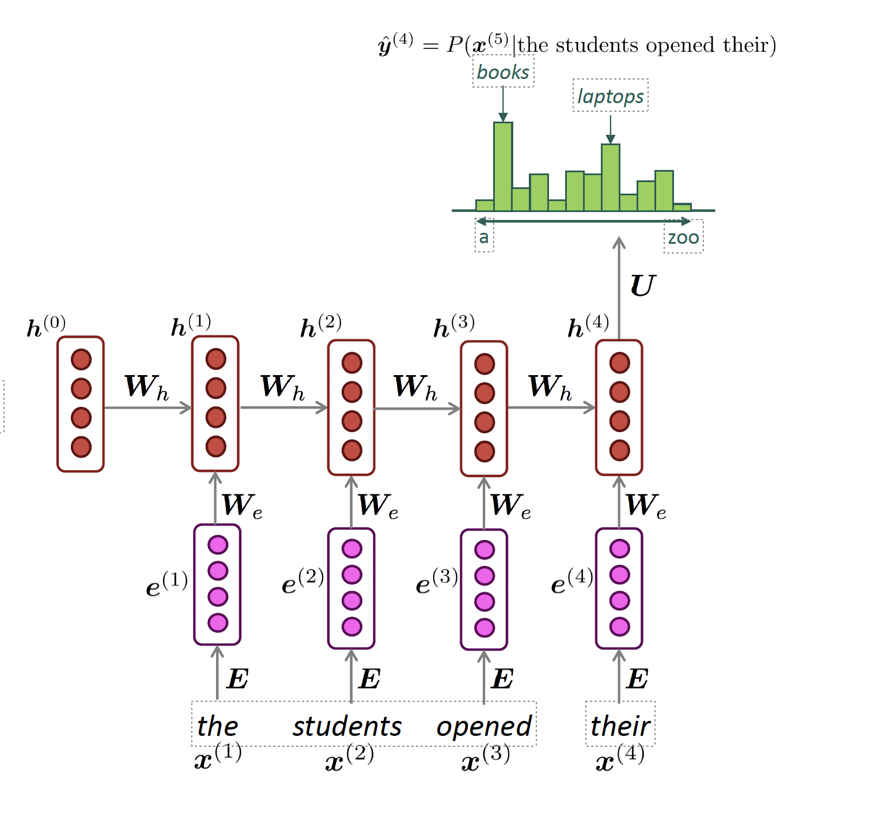
LSTM
Def: A RNN with gated cells. Each gated cell has several matrix multiplication + non-linearity variations, and allows each hidden state to store, update, and forget information from previous steps.

Challenges with pre-transformers models
Bottleneck problem: RNNs are unrolled from left-to-right. Hard to capture long-term dependency
Nearby words are often more important because they are incorporated more recently
Gradients are unstable (vanishing or exploding) because they depend on continuous chain rules for the calculation
Non-parallelizable: RNNs handles text sequentially, so you cannot really speed things up with GPUs
Notable aspects of Transformers
We will go over four notable aspects of Transformers:
Encoder x Decoder: separates learning embeddings from input (encoding) to text generation (decoding)
Attention + Contextual Knowledge: the REAL DEAL. Allows words to focus on the most relevant words of a particular sequence. Different vectors for “tower”, “eiffel tower” or “beer tower”. Or the teddy bear examples from Darren and Puran
Parallelization: All tokens are processed simultaneously rather than sequentially. This means we can process words in parallel via GPUs!!
Training via Masked Attention Masked inputs to train bi-directional models
Original Transformer Architecture
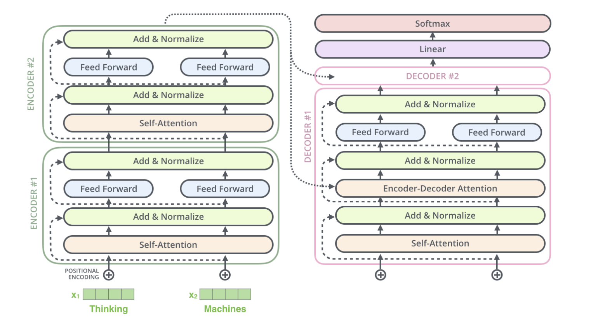
Feature 1: Encoder and Decoder
Encoder and Decoder
The original transformer is primarily composed of two blocks:
Encoder (left): The encoder receives an input and builds a representation of it (its features).
Encodes words via self-attention mechanism, and by itself.
Every token in every sequence gets an embedding. These are dynamic embeddings, they change their direction when tokens are used in different contexts.
Decoder (right): The decoder uses the encoder’s representation (features) along with other inputs to generate a target sequence.
- Text generation: it spells out for you an probability for next word sequence
Multiple Encoder Blocks
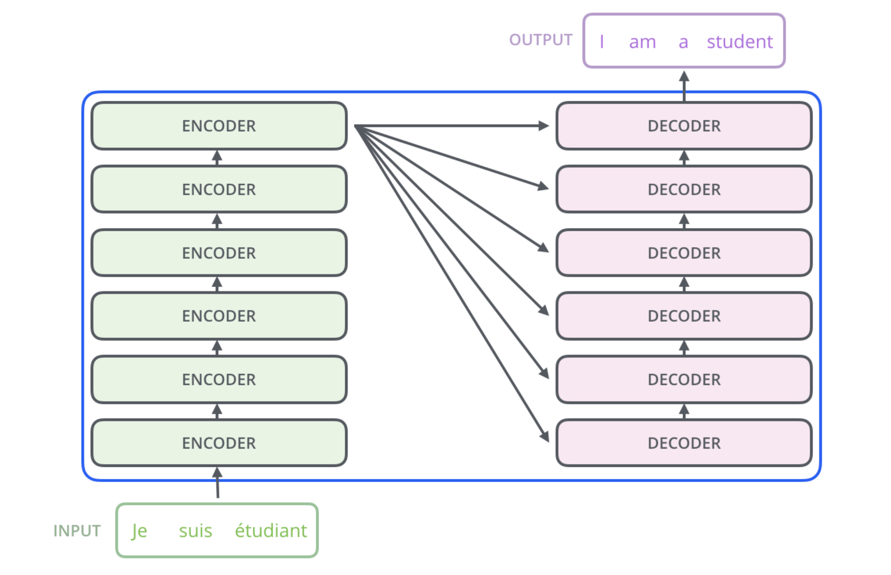
Looking Inside of an Encoder Block
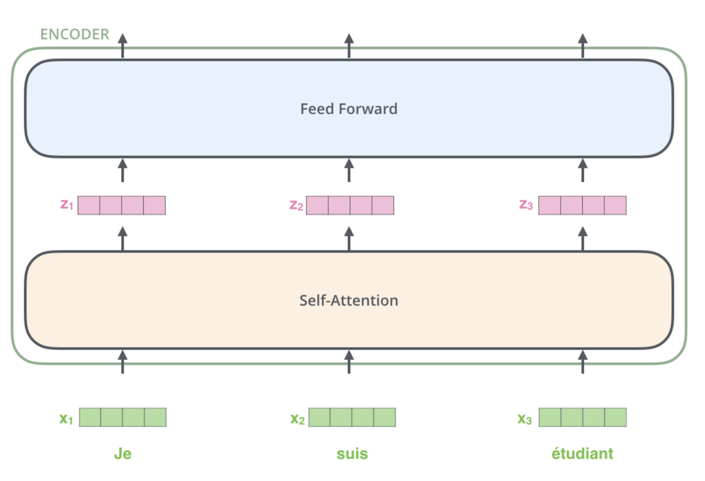
Feature 2: Self-Attention
Self-Attention: Definition
Def: the mechanism in the transformer that weighs and combines the representations of context words in the token encoding
Word2vec: the representation of a word’s meaning is always the same vector irrespective of the context
- the vector for ‘bear’ is the same, no matter if it refers to a ‘teddy bear’,a ’black bear”, or a the show “the bear”.
Transformers can build contextual representations of word meaning (contextual embeddings) by encoding the meaning of contextual words into the token representation.
The encoder will input a static embedding for each token, but output a contextual embedding for the token in the sentence
Self-Attention: Intuition
Consider these sentences:
“The chicken didn’t cross the road because it was too tired.”
“The chicken didn’t cross the road because it was too wide.”
“It” refers to different nouns in each sentence.
If we read the sentences from left to right, we get: The chicken didn’t cross the road because it…. ?
At this point, we don’t know what “it” is referring to.
One of the fundamental limitations of RNNs was that you must walk through the sequence one word at a time. Self-attention solves many of these issues!
Self-Attention Hypothetical example
Attention estimates each word’s representation via information from embeddings from contextual words.
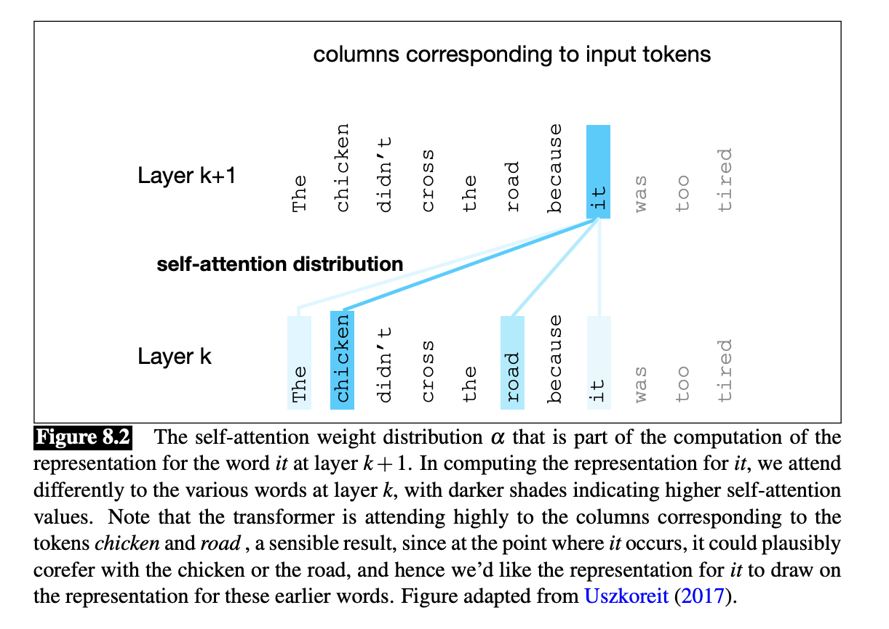
Self-Attention: Simple Example
Assume \(\mathbf{w}_{1:n}\) be a sequence of words in vocabulary, as a one-hot encoding.
Step 1: For each word \(w_i\), let’s start with a static embedding using a look-up:
\[ x_i = E w_i, \]
With E having the dimensions d (embedding size) and V (vocabulary size)
Step 2: Each word embedding is transformed using three weight matrices: Q, K, V:
\[ q_i = Q x_i \quad \text{(queries)} \]
\[ k_i = K x_i \quad \text{(keys)} \]
\[ v_i = V x_i \quad \text{(values)} \]
Step3: Compute pairwise similarities and normalize with softmax. Similarity between query (q_i) and key (k_j) as a simple dot product
\[ e_{ij} = q_i^{\top} k_j \]
Attention weights:
\[ \alpha_{ij} = \frac{\exp(e_{ij})}{\sum_{j'} \exp(e_{ij'})} \]
Step 4: Compute output as weighted sum of values
\[ o_i = \sum_j \alpha_{ij} v_j \]
Self-Attention on Transformers
\[ \text{Attention}(Q, K, V) = \mathrm{softmax}\left( \frac{QK^\top}{\sqrt{d_k}} \right)V \]
Illustrated Transformers: Basic Parameters
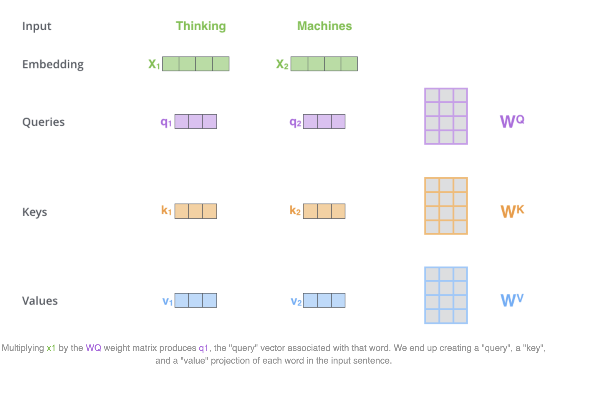
Illustrated Transformers: Attention Score
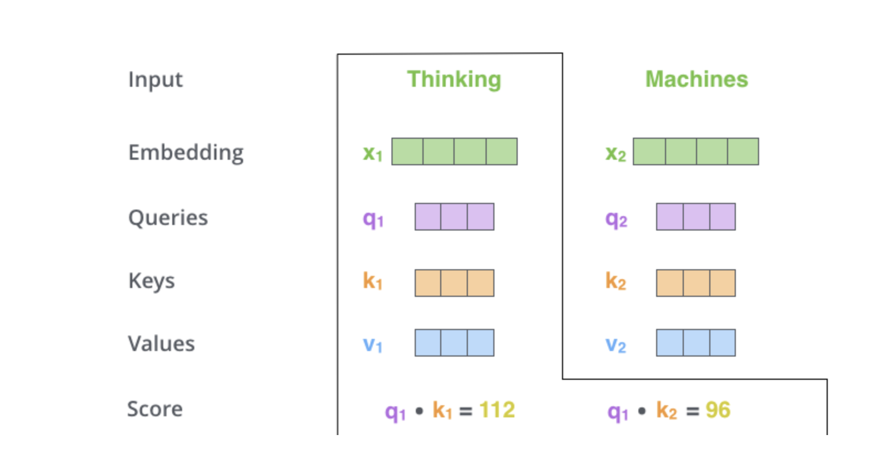
Illustrated Transformers: Softmax Transformation
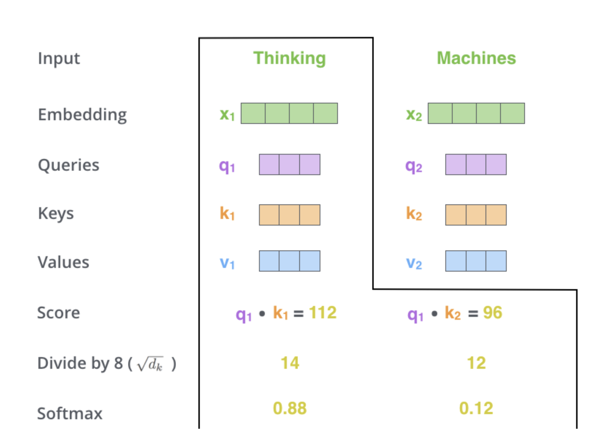
Illustrated Transformers: Weights
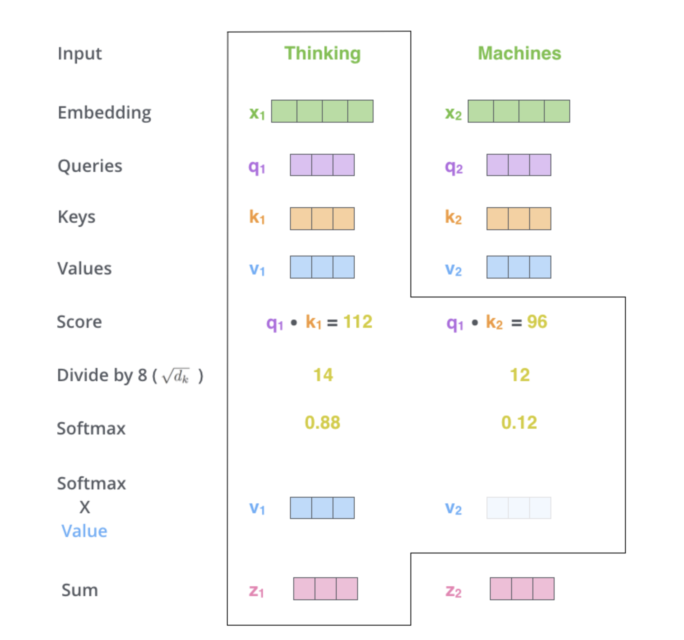
Let’s check again the transformers block
More details on the Transformers Block
Multi-Head Attention: repeat the self-attention multiple times in the same block.
Many Encoder Blocks: one encoder feeds the output token into many other blocs
Feed Forward NN: after every self-attention, there is a feed forward neural network to allow non-linearities to be modelled
Positional Encoding: position of the token in the sequence in embedded as a learneable parameters
Layer normalization: A normalization technique that stabilizes training and gradient calculation
Feature 3: Parallelization
Parallelization
The attention calculation occurs for every token \(i\) with respects to all other tokens \(j\) in the sequence.
No sequence dependence across the tokens, as in the RNN.
As a consequence: these operations are parallelizable.
That’s why everyone is fighting for GPUs!!
Feature 4: Training and Masked Attention
Pretraining a Transformer Language Model
Goal: Learn to predict the next word from context.
Start with a large corpus of unlabeled text
For each token \(w_t\) , the model predicts \(w_{t+1}\)
The model uses self-attention to create a contextualized representation of \(w_1, ... , w_t\)
Prediction is compared to the actual \(w_{t+1}\) using cross-entropy loss
Use gradient descent to minimize this loss
Unmasked Self-Attention (Encoder)
Transformers are trained in next-word prediction… But this affects only the decoder part of the model!
Encoder: each token in the self-attention can attend to all other tokens simultaneously within the same input sequence.
This is called: bidirectional attention. It helps the encoder build rich contextual representations.
Masked Attention (Decoder)
In our previous examples of self-attention, each query attend to all preceding and subsequent outputs
But sometimes we don’t want to do that—we want the model to only learn from the preceding input
- Especially important if we are training generative models (DECODER MODELS)
We can use masked attention, where the model is only allowed to attend to previous inputs
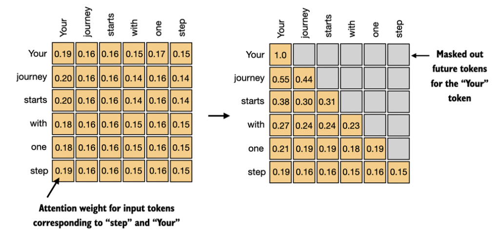
Different uses of Transformers
A final note on Transformers
Modern large language models (LLMs) are all based on transformers. There are encoder-only models (e.g., BERT), decoder-only models (e.g., GPT), and encoder-decoder models (e.g., T5)
Encoder-only: BERT (all variants: BERT-base, BERT-large), RoBERTa, DistilBERT, others…
Decoder-only: GPT, LLaMa, Mistral, most other LLMs
Encoder-Decoder:T5, Bart,
Encoder Only (works great for classification!)
These models convert an input sequence of text into a numerical representation
These models show state-of-art performance on tasks like text classification and named entity recognition (see Timoneda and Vallejo’s paper).
Uses full (or bidirectional) self-attention
Bert Schematic
To use encoder model in text classification, you add a new classification head to the model
- Classification head: a neural network on top of sentence embedding, represented by [CLS] token… but it could be really just the mean of all tokens.
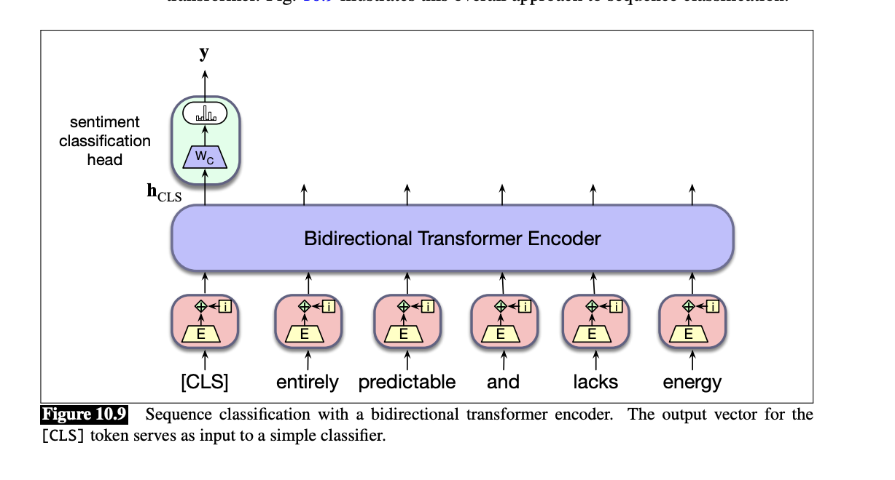
Coding
Text-as-Data